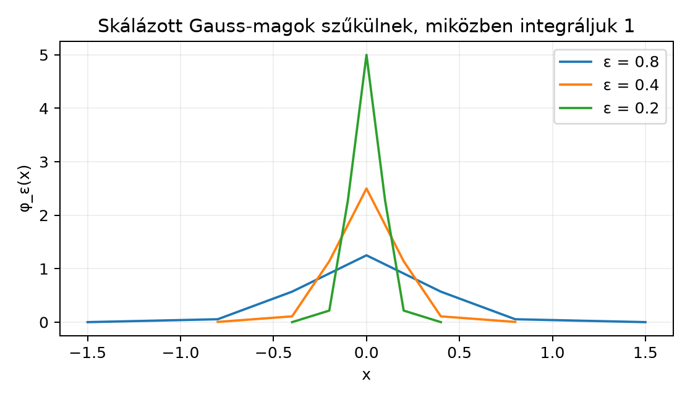

A fizikában a Dirac-deltát gyakran úgy írják le, mint egy „függvényt”, amely a pontban végtelen nagy, mindenütt máshol nulla, és az integrálja . A mértékelméletben viszont láttuk, hogy ilyen függvény nincs, és az integrál sem érzékeli a pontonkénti értékeket. Ugyanakkor a Approximatív egységek: a Dirac-delta mint határérték alfejezetben azt is megfigyeltük, hogy a szűkülő, egységnyi tömegű magfüggvények családjára teljesül:
ha folytonos és korlátos. Ez a határérték már nem függvény, hanem egy olyan művelet, amely a próbafüggvényhez a számot rendeli. A disztribúcióelmélet ezt a nézőpontot teszi pontossá: a -t nem pontonkénti értékekkel, hanem azzal definiáljuk, hogyan hat függvényekre. Ebben az alfejezetben ezt a pontos fogalmat és a disztribúciós deriváltat vezetjük be.
Egy próbafüggvény sima, kompakt tartójú függvény. A hozzárendeli a próbafüggvényhez annak -beli értékét. A skálázott Gauss-magok szűkülnek és magasodnak, miközben integráljuk mindig marad. Az ábra azt mutatja, hogyan koncentrálódik a tömeg a pontba.

Az ábra numerikus értékei a Gauss-mag képletéből származnak. Az integrál egy próbafüggvénnyel egyfajta súlyozott átlagot ad, és a mag szűkülésével ez az átlag egyre inkább a -beli értéket emeli ki.
Definíció. (Próbafüggvény, próbafüggvény-konvergencia) Legyen azon függvények halmaza, amelyek végtelenül sokszor differenciálhatók, és van olyan kompakt halmaz, amelyen kívül eltűnik. Az ilyen függvényeket próbafüggvénynek (test function) vagy kompakt tartójú sima függvénynek nevezzük.
Azt mondjuk, hogy a -ben, ha van olyan közös kompakt halmaz, hogy minden és eltűnik -n kívül, és minden esetén a -adik deriváltak egyenletesen konvergálnak:
Ez a fogalom a teljes topológia nélkül is elegendő ahhoz, hogy a folytonosságot kezeljük. Létezik nemtriviális próbafüggvény: például
végtelenül sokszor differenciálható, és tartója .
Definíció. (Disztribúció) Egy leképezést disztribúciónak (distribution) nevezünk, ha
A disztribúció hatását gyakran így is jelöljük: . A disztribúciók terét -rel jelöljük.
Példa. (Lokálisan integrálható függvény mint disztribúció) Legyen lokálisan integrálható, azaz minden kompakt intervallumon Lebesgue-integrálható. Ekkor definiáljuk:
Ez lineáris, mert az integrál lineáris. Ha a -ben, akkor egyenletesen, és a tartók közös kompakt halmazban vannak, így
Tehát disztribúció. Fontos: ha majdnem mindenütt, akkor , tehát a függvény mint disztribúció csak a majdnem mindenütt egyenlő függvények osztályát látja.
Példa. (Mérték mint disztribúció) Legyen lokálisan véges mérték az Borel-halmazain, azaz minden kompakt halmazra . Ekkor
is disztribúció, mert a próbafüggvény kompakt tartójú és korlátos, így az integrál véges. A A Dirac-mérték és a diszkrét mértékek alfejezetben bevezetett Dirac-mérték ilyen, és hatása:
a Integrálás Dirac- és számláló mérték szerint: a sorok mint integrálok alfejezet szerint. Ezért a Dirac-mértéket Dirac-delta disztribúciónak is nevezzük, és rendszerint -val jelöljük:
A lineáris, és folytonos is, mert ha a -ben, akkor az egyenletes konvergencia miatt.
Ellenpélda. (Nem minden lineáris formula disztribúció) A
hozzárendelés nem lineáris, mert , míg . Emiatt nem disztribúció. A tehát ebben az egyszerű értelemben sem létezik.
Most kapcsoljuk össze a Approximatív egységek: a Dirac-delta mint határérték alfejezetben látott képpel.
Tétel. Legyen approximatív egység: , , és minden esetén . Ekkor minden próbafüggvényre
Bizonyítási terv. Kihasználjuk, hogy a teljes tömeg . A különbséget két részre bontjuk: a egy kis környezetében a folytonosság miatt kicsi, a környezeten kívül pedig a próbafüggvény korlátos, de oda már kevés tömeg jut.
Bizonyítás. Mivel , írhatjuk
Legyen . Mivel folytonos, van olyan , hogy esetén . Ekkor
A külső részen korlátos, legyen . Így
Az approximatív egység definíciója szerint ez az integrál -hoz tart, tehát választhatunk elég kicsi értéket, amelyre ez a tag is . Összeadva , és mivel tetszőleges, a határérték valóban . ∎
Ez a tétel adja a disztribúció szemléletes jelentését: a nem függvény, hanem approximatív egységek disztribúciós határértéke.
A disztribúciók legfontosabb előnye, hogy minden disztribúció akárhányszor deriválható, akkor is, ha a mögöttes függvény nem differenciálható. A definíció a parciális integrálásból ered.
Motiváció. Ha folytonosan differenciálható, akkor a A kalkulus minimuma: derivált, primitív függvény, parciális integrálás alfejezet szerint esetén
A peremtag azért tűnik el, mert kompakt tartójú. Ez a formula már akkor is értelmes, ha nem differenciálható, csak -et tekintjük.
Definíció. (Disztribúciós derivált) Ha , akkor a disztribúciós deriváltja (distributional derivative) az a disztribúció, amelyre
Tétel. A fenti valóban disztribúció. Ha folytonosan differenciálható, akkor .
Bizonyítás. A linearitás: ha és , akkor
A folytonosság: ha a -ben, akkor a definíció szerint is, ezért , tehát . A második állítás a fenti motivációs számolás. ∎
Legyen a Heaviside-függvény. Ekkor minden próbafüggvényre
A Newton–Leibniz-formula és a próbafüggvény kompakt tartója miatt
Tehát disztribúcióként
Ez pontosan az a kapcsolat, amely a fizikában a „ a lépcső deriváltja” kép mögött van.
Állítás. Az függvény disztribúciós második deriváltja
Bizonyítás. Minden esetén
Bontsuk fel az integrált:
Az első tagra parciális integrálást alkalmazunk:
Mivel kompakt tartójú, a peremtag , így az első tag
| $$ |
|---|
| \int_0^\infty \varphi’(x),dx |
| = |
| -\big[\varphi(\infty)-\varphi(0)\big] |
| = |
| \varphi(0). |
| $$ |
A második tag:
A peremtag ismét , tehát a második tag
A két tag összege , tehát . ∎
Példa. (A deriváltja) Az általános definíció szerint
Ez egyfajta „dipólus”: a próbafüggvény deriváltjának negatívját méri az pontban. A magasabb deriváltak hasonlóan:
A disztribúciók általában nem szorozhatók össze egymással. Ha megpróbálnánk a -et úgy definiálni, hogy , az nem lenne lineáris, ahogy fentebb láttuk, tehát nem lehet disztribúció. Ezért a értelmes matematikai objektumként ebben a keretben nem létezik.
A mint függvény. A nem függvény, nincs pontonkénti értéke. Azt mondhatjuk, hogy disztribúció, illetve mérték, de nem „végtelen magas és nulla széles” függvény. A pontonkénti kép sok hibához vezet, például a kifejezéshez.
A disztribúciós derivált előjele. A definícióban a negatív előjel lényeges: . Sokan pozitív előjellel számolnak, de a parciális integrálásból az előjel rögzített. A levezetésnél is az előjel hibája -t adna.
A függvény mint disztribúció m.m. egyenlősége. Ha majdnem mindenütt, akkor . Ez azt jelenti, hogy a disztribúció nem látja a pontonkénti értékeket, ezért az olyan állítás, hogy , értelmetlen; a disztribúciós deriváltja , de a értéke a -ban nem szerepel.
Az approximatív egység pontonkénti határértékének keresése. A rendszerint nem konvergál pontonként egy függvényhez, de disztribúcióként -hoz tart. A kettő különböző konvergenciafogalom.
Fogalmi kérdés, definíció-ellenőrzés. Igazolja, hogy az alábbi hozzárendelés disztribúció:
Számolási feladat. Legyen . Számítsa ki a disztribúció deriváltját. Mutassa meg, hogy .
Bizonyítási feladat. Bizonyítsa be részletesen, hogy ha , azaz folytonosan differenciálható, akkor .
Alkalmazás, továbbvitt eredmény előkészítése. Legyen Mutassa meg, hogy minden próbafüggvényre az összeg véges, és disztribúció. Ezt a Dirac-fésűt használjuk majd a Poisson-összegzés, mintavételezés és aliasing alfejezetben.
Megoldás. Linearitás: az összeg tagjai lineárisak. Folytonosság: ha a -ben, akkor és , tehát .
Megoldás. A Heaviside-függvény eltolt változatának disztribúciós deriváltja tehát . Az kiszámításához ugyanazt a parciális integrálást alkalmazzuk, mint fent, csak a helyett körül; az eredmény .
Megoldás. Minden esetén A parciális integrálás szerint mert kompakt tartójú, így a peremtag . Tehát
Megoldás. Legyen és legyen a tartója a kompakt halmazban. A korlátos, tehát csak véges sok eleme van -nak, így az összeg véges. A linearitás nyilvánvaló az összeg linearitásából. Ha a -ben, akkor van közös kompakt tartó, és azon belül is csak véges sok szerepel; ezekre , tehát az összeg is konvergál. Ezért disztribúció.
A próbafüggvények tere : sima, kompakt tartójú függvények. A disztribúció folytonos lineáris funkcionál ezen a téren. Minden lokálisan integrálható disztribúciót definiál képlettel, minden lokálisan véges mérték pedig módon. A Dirac-delta a disztribúció. Ha approximatív egység, akkor disztribúcióként. A disztribúciós derivált definíciója ; ebből és . A disztribúciók általában nem szorozhatók össze, ezért nem értelmes.
Továbbvitt eredmény. A disztribúció, a disztribúciós konvergencia és a disztribúciós derivált fogalmát használjuk a Temperált disztribúciók Fourier-transzformáltja: δ̂ = 1 alfejezetben, ahol a Fourier-transzformáltját definiáljuk, valamint a Poisson-összegzés, mintavételezés és aliasing alfejezetben, ahol a Dirac-fésű disztribúció jelenik meg.
Ebben az alfejezetben a disztribúcióelmélet klasszikus alapfogalmait ismertetem. Konkrét tankönyvet nem idézek, ezért nincs ellenőrizendő oldalszám vagy tételazonosító.